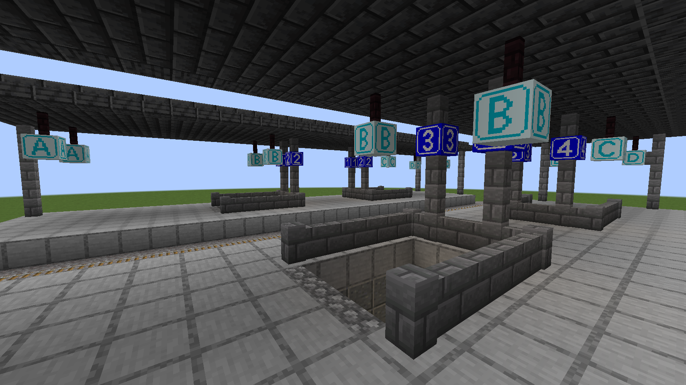
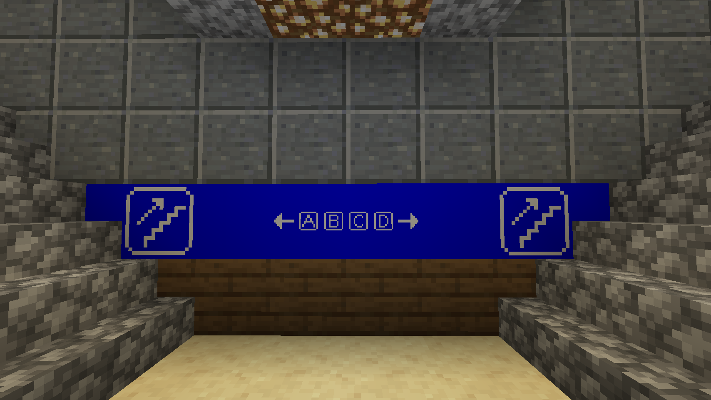
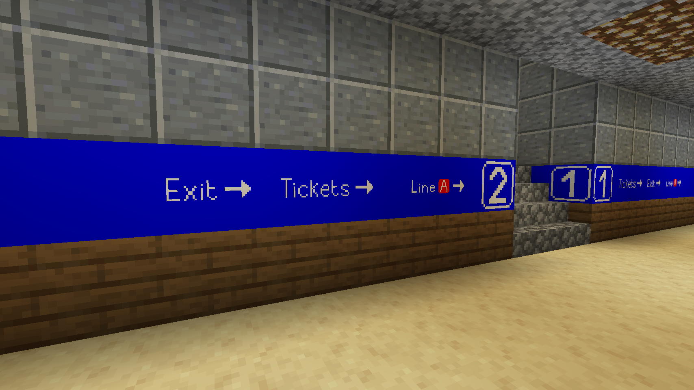
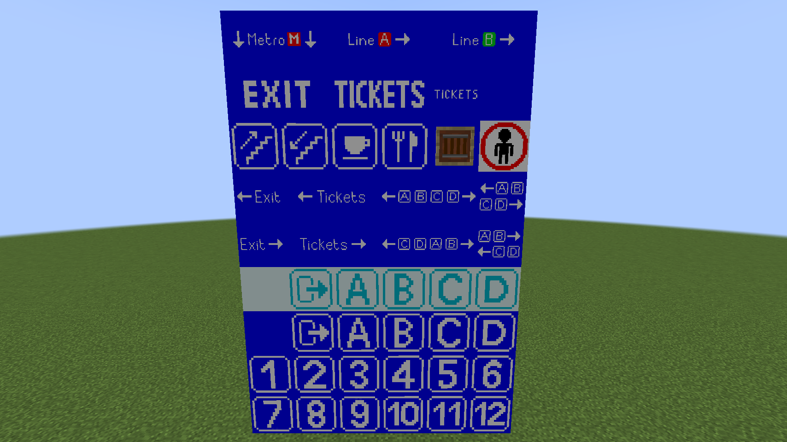

Railway Decorations mod for Minecraft 1.19.2
This is a simple mod, made with the MCreator tool, which adds various decorative blocks (as well as an item used to craft them in Survival mode) useful to decorate railway stations in Minecraft.
Currently, the mod adds blocks used for signage, for things like platform numbers, zones, ticket booths, etc.; in the future, other types of blocks will be added as well, such as platform edge stripes and decorations for the inside of station buildings.
Note: currently the mod is only available for Minecraft 1.19.2 with Forge 43.2.0.
Screenshots
   {kind=link}
{kind=link}
{kind=link}
{kind=link}
Current features
- Railway crafting item - used for crafting the rest of the items in the mod (to avoid potential conflicts)
- Empty railway signs (blue and white)
- Platform numbers 1-12
- Zone A-D signs (blue and white)
- Exit signs (blue and white)
- Large "exit" and "tickets" sign
- Zone A-D indicator signs (either 1 or 2 blocks wide)
- Tickets and Exit indicator signs
- Ticket booth sign
- Staircase signs (ascending and descending)
- Bar and Restaurant signs
- No entry sign
- Metro station signs (metro entrance sign and lines A and B signs)
Planned features
- More styles of signage (for example, yellow on black for metro/subway stations)
- Platform edge blocks (stone/smooth stone/andesite) and slabs
- Station interior decorations (ticket machines, computers, etc)
- Automatically generated structures (abandoned railway repair shop)
Downloads
Binary downloads and source files are all available on the GitHub page of the project.
Version 1.0.1 (latest release): Download
Version 1.0.0b: Download
Version 1.0.0: Download